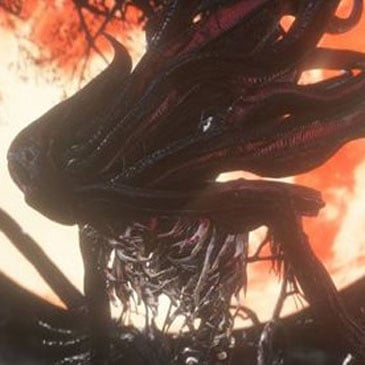
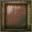
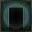
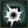
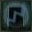
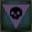
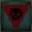

Moon Presence |
|||
|---|---|---|---|
|

|
|||
| General Info | |||
|  | Location | Drops | |
| 8909 | 230000 | Hunter's Dream | None |
| Defenses | |||
|  | -- | ||
| 137 | 137 | 137 | -- |
|  |  |
 | |
| ?? | 75 | 75 | 75 |
|  |  |  |
 |
| 999 | 999 | No | No |
Moon Presence (月の魔物 Tsuki no mamono lit. "Moon Demon/Fiend") is an optional final boss in Bloodborne.
Moon Presence Information
- The Moon Presence can only be fought if you acquire and consume three of the four available One Third of Umbilical Cord items, refuse Gehrman's request, and then defeat Gehrman, The First Hunter. You don't have to have consumed the Cords prior to refusing - you can consume them after selecting "refuse", but before you defeat Gehrman.
- If you have to fight this boss multiple times, you will NOT have to fight Gehrman again.
- Similarly to the Gehrman fight, once you have consumed the cords there is no going back - if you consume the cords and refuse Gehrman’s offer you will have to fight the boss until you defeat it. If you are killed by the boss you will respawn in the Hunter’s Dream.
- Upon its defeat a cutscene will initiate and the game will end; you will then obtain the "Childhood's Beginning" trophy.
- The game will end and a New Game Plus will immediately initiate once you defeat the boss, so make sure to have all your affairs in order before attempting it.
- Gain 5 Insight for finding the boss and 5 Insight for killing it.
Locations
Drops
- Blood Echoes: NG (230,000), NG+ (681,950), NG++(750,145), NG+3 (852,438), NG+5 (1,022,925), NG+6 and so on (1,704,875)
Combat Information
- An easy way to fight the Moon Presence is to stay in mid-range and lure it into its 3-hit combo. During the 3rd hit dodge into the attack (time this properly so you don't take damage) you should end up behind it and can manage 1-2 hits before it jumps away. Rinse and repeat.
- This is a much easier fight than Gehrman, but if you're out of blood vials you may want to let it kill you/use a Hunter's Mark to reset your blood vials to max. You will NOT have to fight Gehrman again.
- Periodically through the fight the Moon Presence will summon pale white balls which burst and rain blood in a medium-sized AoE. If you get covered by the blood, you will not be able to heal for a short period of time. It acts in a similar fashion to Numbing Mist.
- Susceptible to Visceral Attacks.
- Gaze of the Moon is an AoE attack that takes the shape of a cone. It is a very unique type of attack in that it cannot kill you - it will, however, reduce you to exactly 1 HP. The attack cannot be dodged and your health will go to 1 regardless of any resistances, defences, your Vitality level or your HP before the attack. It can unleash a devastating amount of damage so take very special care when dealing with this attack. Keep in mind however that successfully casting this attack also causes the Moon Presence to become exhausted and therefore giving you time to plan accordingly and strike back. It is possible to get all your health back through rally after this attack due to the crazy long window where it cools off after the attack.
- Burial Blade in scythe form has very high rally, making it an excellent counter to this attack. By attacking the Moon Presence while it is exhausted and vulnerable, one can safely recover all of their lost HP. However, since Burial Blade is obtained from defeating Gehrman, this strategy is impossible to players in NG unless they use Bold Hunter's Mark or are killed by the Moon Presence so as to return to Hunter's Dream in order to purchase the weapon.
| Attack Name | Attack Description & Counter |
|---|---|
| Grab | The Moon Presence will swipe twice then do a forward lunge grab. This attack is very easy to strafe around and get a free hit in. |
| Swipe | The boss will smash his right hand on the ground, and just after, use his tentacles to make a very fast swipe. It can be very surprising, but it can be very easy to dodge it by stepping back. |
| Jump | The boss will jump on you and try to smash you. This attack is very easy to dodge by sidestepping it. Usually you can land one or two attacks after the boss lands. |
| Blood Moon Orb | The boss will pop one pale white orb above its head, raining blood down on the player. If the blood hits you, you will be de-buffed for 20 seconds, and you will not be able to use Blood vials. |
| Blood Clouds | The boss summons pale clouds which rise from the ground as it attacks you. After a moment, these clouds burst and rain blood in their vicinity. Being hit by the blood prevents you from using Blood Vials for a while. |
| Gaze of the Moon | The boss will hold its face and release a burst of light. Those hit by this attack will be left with 1HP. It can instantly kill co-operators with less than 30% health. Once its health is below 30%, this attack will also prevent you from using healing items. After this attack, the boss will be still for a few seconds; if there are no Blood Moon Orbs close to him, rush to the boss and land multiple attacks on him. It is possible to recover all of your HP by attacking the boss, as the window for recovery is huge. This attack cannot be dodged. |
Strategies
Melee Strategy
The fight with the Moon Presence begins immediately after you've beaten Gehrman, The First Hunter. Chances are you're probably low on blood vials and quicksilver bullets so the recommended tactic is to allow the boss to kill you or use a Bold Hunter's Mark to refresh your stocks (nevertheless, attempting to beat the boss with what you have is still a good idea if you are confident). If you're fighting the Moon Presence, Gehrman won't have dropped any Blood echoes, so you don't need to worry so much about losing them.
As with most of the bosses in the game, the Moon Presence is weak to bolt and fire (arcane untested at this point) so bolt paper/fire paper, a fire imbued weapon or the Tonitrus leveled to at least +8 are recommended for this fight.
While the Moon Presence is very aggressive, the fight is much easier than the Gehrman battle. It will chase you down quickly, but its 3-hit combo can be easily dodged, allowing you to get behind the boss and score a quick combo. In fact, if you happen to be co-operating on this fight, the ends of the boss' tail can be hit, so if it is not focused on you, there is a perfect way to safely deal damage.
Besides the combo attack, the main melee attack to be cautious of is its tail swipe. It will spin on the spot and its tail will catch you like a mace, knocking you down. Fortunately, it doesn't come back to deal damage when you're on the ground, so get out of there quickly.
About a third of the way into the fight it will start using a cone attack. This has it stopping for a few seconds to charge and emanating a large red blast from its head. If you get close enough, quickly enough you can score a charged attack on it, staggering it and opening it up for a visceral attack. However, if you're caught by the blast you'll be knocked back and your health will be dropped to 1hp. The attack will NEVER kill you, but it leaves you incredibly vulnerable. As a trade off, it rests for a few seconds after the attack, so you can either back off and heal or get aggressive and gain your health back via regain.
It will also start secreting a black liquid from its tail. This is the downside of staying behind it. If you're caught in the liquid you're unable to use Blood Vials and therefore, unable to heal. If you're affected by this fluid then caught by the cone attack you're guaranteed to be in a bad position. Eventually it wears off so if you are on low health and affected by this, run and keep your distance until you can heal up.
Videos
(( Please respect these video posting guidelines))
Notes & Trivia
- The appearance of the Moon Presence resembles various depictions of Nyarlathotep from H.P. Lovecraft's fiction.
- The Moon Presence, along with Mergo's Wet Nurse, are the only two bosses that give the message "Nightmare Slain" instead of the normal "Prey Slaughtered" (or the Japanese message "You Hunted"). In the DLC, this number increases to three with Orphan of Kos.
- There is a glitch wherein a summoned co-operator will appear in the cutscene where the host should be seen rejecting the Moon Presence's embrace.
- It is possible to defeat the Moon Presence, and still remain in your current game difficulty by using a hunter's mark just after you defeat the boss. Entering the area again, before the great tree will trigger the cutscene leading to new game plus.
- The song playing during the first phase of the fight is based on the Nameless Song from Dark Souls.
- The Moon Presence may clutch its face right before it begins to thrash. This could indicate a headache or that it's blinding itself.
- The Moon Presence may have another name: Flora. the doll has dialogue saying: "O Flora, of the moon, of the dream", and there is no other character named flora that the doll could know of that's related to the moon and the dream. this may also imply that the Moon presence is supposed to be female, as flora is a girl's name.
Lore
- Given the effects that the One Third of Umbilical Cords have on the Moon Presence, we can infer that the Moon Presence is what the game refers to as a "Great One".
- The Iosefka Imposter's dialogue during the Blood Moon may reference this: "How they writhe, writhe inside my head... It's... rather... rapturous...".
- The Living String suggests that "Great Ones" take up a variety of forms, the Brain of Mensis being one of them.
- "... And when the Great Ones descend, a womb will be blessed with child."; before entering the fight with Mergo's Wet Nurse, we see Yharnam, Pthumerian Queen, weeping. The bloodstain on her dress is more than likely a way of saying that she was pregnant. In any case, it's only logical that she must be weeping for her child, Mergo.
- We also witness Arianna give birth to an alien child that drops a One Third of Umbilical Cord, suggesting that for this "Red Moon", she was blessed with a child by a Great One. It's no surprise really, given the similarities between Arianna and The Queen (See Arianna's page for more detail).
- It's also possible that the Iosefka imposter was trying to become impregnated with a Great One, as she also drops an Umbilical Cord and seems to have been experimenting with those sent to her clinic.
- "Every great one loses its child, and then yearns for a surrogate..."; a surrogate is a replacement. The fight with Mergo's Wet Nurse suggests that something in the past resulted in the death of Mergo.
- The Moon Presence can be considered the true founder of the Hunt; it used Gehrman as a surrogate host to create the Hunter's Dream in order to undo the Great One's madness. If it weren't for its existence, the Hunt wouldn't exist, and the Hunter may have become yet another victim of the Beast Plague.
- Like the Brain of Mensis, the Moon Presence seems to be subject to rot and decay. There seems to be a kinship between the Moon Presence and the Silverbeasts. They are both capable of bipedal and quadrupedal movement. They both have the same exposed ribs. The slanted heads of the Silverbeasts may be an attempt to recreate the Moon Presence's unusual visage.
Gallery


 Anonymous
AnonymousBro this Is years late but just stick behind the moon presence and avoid its attacks once It moves away from you, 3 vials, 3 bullets and I still almost got that guy to 0 health before I initially died
- Anonymous
While MP does seem to be benevolent, it's still probably for the best that we "replace" her cause she's still kinda **** at doing what needs to be done. Her MO is maintaining the dream and putting the hunter in Gehrman's place, implying hunters still serve a purpose which means there's probably still beasts. Perhaps as a Great One the hunter can attempt to go about removing the influence of the old blood entirely.
- Anonymous
I had more trouble with pinwheel and mist noble than this dude..
- Anonymous
I remember having only 7 vials and 4 QSB after defeating Gehrman
I went on to the fight with MP and ear more or less 3/4 of his/her lifebar
Then I died :/
I really liked it, a very unique and cool fight
With strange AoE attacks and that one that leaves you with 1HP
10/10 would become an Infant Great One again
Best finale
- Anonymous
When I killed Gehrman I had only 7 vials and 4 QS bullet
I managed to eat 3/4 of his/her life
Then I died :/
I really wanted to first try it, was a cool and unique fight tho
With the strange AoE attacks and that one that leaves you 1HP
10/10 I would become an infant Great One again
- Anonymous
After all these years, people still believe the Moon Presence is somehow a bad guy. The description of the Moon rune (and I can't stress enough that this is the "Moon" rune) states: "The Great Ones that inhabit the nightmare are sympathetic in spirit, and often answer when called upon." This is precisely what the Moon Presence did when Laurence and Gehrman beckoned it, presumably to help get rid of the beast scourge. That's why it conceived the Hunter's Dream in the first place, to grant certain hunters the ability to revive and fight ever greater threats. And that's what's still going on at the beginning of the game. The Mensis Ritual and their audience with Mergo is responsible for the Blood Moon in Yharnam, which in turn triggers people to transform into beasts (similar to how the Old Blood provokes an adverse response in humans). That's what the Moon Presence wants you to bring to an end. Of course Gehrman hates the dream, he's trapped by it. But that doesn't make the Moon Presence evil. In fact, I don't think it even understands his grievances.
- Anonymous
i don't think this boss was meant to be difficult, you're basically confronting a puppetmaster with a sledgehammer or whatever weapon your using at the time
- Anonymous
Lmao I killed it and died at the same time, lost the rewarded blood echoes rip
- Anonymous
- Anonymous
Tiny health pool, way too easy. Super cool design though. Just give it 3 more phases and it'll be a great fight
- Anonymous
The Moon Presence is my favorite boss next to Amygdala. My reasoning being it's design, the setting under a darkened sky with the Blood Moon, as well as its attacks from it's moveset like Blood Clouds, the Blood Moon Orbs, or the beam attack where it reduces your HP to 1 called Doom Gaze. If only it were as hard as Laurence or Orphan of Kos.
- Anonymous
The sneeze attack was the worst kind of enemy for the Chikage...
- Anonymous
This boss is a total joke. You can just attack its side/butt and win. It barely even does any damage other than one of its moves dropping you to 1 hp, but it just sits there after doing it, allowing you to heal/rally and keep fighting. What a weird final boss.
- Anonymous
Really cool looking boss, very lore, much wow. But it's way too easy to kill, which sort of undermines the whole idea of it being such a powerful mysterious being.
- Anonymous
Am I seriously the only one having a hard time with this boss?
- Anonymous
the moon presence is probly the the reason yarhnanam is so ****ed up its basically testing a hunter to see if their worth of being "adopted" by it
im defiantly sure having this thing as a parent wont go bad at all
- Anonymous
So i've been wondering this for awile now. Idk if this has been asked b4 but why exactly it the moon presence's bloodtinge weakness unknown?
- Anonymous
How is ariana's child alien when she got ****ed by a great one
- Anonymous
If i use bold hunter mark to escape moon presence in order to get Burial Blade will i be able to leave the dream and fight some bosses that i didnt do? For example CE and EDOC?
- Anonymous
A question: i had entered the gate where gherman is sitting and i started the dialogue without refusing or accepting, but leaving without clicking anything. Now, if before entering the gate i consumed three umbilical cords, can i fight the moon presence (and then take the burial blade before the ng +) or is it too late and after defeating gherman will the ng + start? I ask because on the various sites they say different things. Thanks in advance of the answer :)
- Anonymous
the villan who may actually be a alright guy if you actually give him a chance
- Anonymous
The Moon Presence may actually be completely benevolent towards humanity. It's established in dev notes that the Mensis ritual is what's making things worse and turning everyone into beasts. The Presence contracts you to stop the ritual, providing you with infinite lives, the ability to level up, access to a workshop and mentor, and convenient teleportation to get around. It may have also saved you from becoming a beast in the opening cutscene, although that one is ambiguous as to what exactly prevented you turning into a beast. After you stop the ritual and save humanity it returns you to the waking world none the worse for wear unless you kill the dream's attendant. Imprisoning an attendant like Gehrman or the player might just be a necessary evil to respond to future catastrophes. Without the Moon Presence you would have just died a few minutes into your first hunt.
- Anonymous
- Anonymous
I like how this is the only boss in the game that doesn't drop anything. Not a key item, a weapon, clothes, gems, upgrade materials, etc. Not. One. Item. But she's got cool Predator locks, so it's all cool with me.
- Anonymous
This boss is actually a great challenge if you simply take off your gems. Im on max ng, and after hundreds of hours into this game i first now realise that its actually a brilliant fight, with the right conditions. Its a shame, all they had to do was give her (?) some more health/damage resistance.
- Anonymous
I have a question: if after i consumed three of the third embilical cord, refused gehrman s proposal but mid fight got killed by gehrman does this mean next time i fight gehrman and win still got to fight moon presence?
- Anonymous
Just beat this game tonight. I took out mom presence on my first try. I got much I guess.
- Anonymous
I absolutely love the embracing cutscene. Very memorable to me.
The entire ambience is such a delight.
- Anonymous
I always wondered about the Moon Presences motives. Of course it's easy to say "Thing's a Great One, their motives are beyond our understanding", but they are capable of quite human feelings like sadness over loss, yearning, wrath, etc.
The whole journey of the hunter, on which maybe hundreds of hunters before us have been sent, ends with the slayage of Mergo, the infant Great One. Once that "Nightmare Slain" pops up on your screen, the workshop lights up and the gig is over, everything else is just the following clean-up: Gehrman getting rid of you, so you forget, what you've done and once he fails, the Moon Presence trying to finish the job herself and recycling you as her surrogate.
Now the motives I've considered so far would be:
a) she just wants a new surrogate, since Gehrman is growing old, seems unhappy with what he got or she just doesn't like him anymore. The hunt would then be your preparation in order for you to defeat this old geezer. But thats a bit too easy, if she just wanted you to get strong, she'd let you fight through Central Yharnam a million times and then have you kill Gehrman in his sleep. Maybe some insight is required to become the surrogate, but I can literally sell the Dream all my insight for some tools and fashion.
So a) got flaws, and I like the others better anyway:
b) The Moon Presence despises Mergo. As a mother that has lost a child due to some known law of the Great Ones, that they all lose a child, the Moon Presence be emotionally compromised by the birth of Mergo, who is a proper Great One nonetheless. So whoever fathered Mergo managed to bypass this universal law in some way that lead to the Moon Presences child loss, maybe throu some ritual, maybe throu some sacrifice or curse, or maybe by just inpregnating a mortal instead of another Great One. Queen Yharnam obviously died and went ghost in the process, but a Great One was born and survived the Death of his mother by being given to a caregiver in the form of the Wet Nurse (for my theory it's notable, that I believe, Mergos Father transformed Pthumerians into bodyguards for his babymother and child, those being the appropriately named Shadows of Yharnam, and the Wet Nurse being just a further modified version of one of these Shadows, not a proper Great One herself). So Mergo was born and The Moon Presence was pissed, because either her pain of child loss could have been prevented by using the Mergo-Method... or... she considered the union of a Great One and a Mortal some blasphemous tainting of a sacred bloodline or something. So she hates Mergo and sends you out to destroy him.
Would make sense on it's own, but that doesn't explain the giant elephant, or should I say, the giant brain in the room. Now this Brain, who is a confirmed Great One, goes by the Name of "Brain of Mensis", but Mensis is the name of the school that found it, and probably not the name of the brain. So I'll just refer to it as the "Brain Great One". And to include it, I expanded b):
b2) The Moon Presence still hates Mergo for reasons listed above, but this time I'm gonna imagine, what exactly happened after Mergo was born: So these Great Ones are pretty smart, so Mergos Father probably expected some backlash from his peers, especially from the Moon Presence, which in the old days probably wasn't a total pushover. It got scary AoE's after all. So the Father (if he wasn't the Brain Great One himself all along) went to see the Brain Great One, one who could cast some scary long ranged AoE's as well, and who, in his prime, was probably on par with the Moon Presence herself. Now this is a strech, but if I dare theorize: The light casted by the Brain Great One is of a bright yellow nature, in contrast to the cold pale light of the Moon Presence. So maybe... just maybe... the Brain Great One could have been something like a Light Elemental or a "Sun Presence" or something like that?
However, it was approached by the Mergos Father to protect the infant from any harm, maybe alongside the Father himself. So the Baby comes out and the Moon Presence strikes, probably wiping out the Pthumerian civilization in the process, battling and killing the father. The Brain Great One was able to withstand the Moon Presences signature attack, being left with only an inch of it's life, but managed to ascend into a nightmare realm and taking little Mergo with him, before it was annihilated completely. The Moon Presence, robbed of its victory and probably furious about the Brain Great One's betrayal as well intended to enter this Nightmare realm herself, but failed, untill Micolash managed to make contact and stay in there. So the Moon Presence saw that and probably tried to attack during the original Mensis ritual: It caused a Blood Moon, sent the Hunters down to Yahar'gul and fight their way into the Nightmare, using Micolash as a Gateway, to slay the child and the Nightmare that hosted the remains of the Brain Great One.
The School of Mensis was prepared however. They had organized some Pthumerians for the evening of the ritual, who, upon seeing the moon turn red as a sign of the Moon Presences aggression (again), began to conjure up some pseudo-Great-One, that being the One Reborn. But since the Moon Presence didn't enter the battle herself and the ritual wasn't finished, they never clashed. Rom, the back then strongest Kin in Byrgenwerth, stopped the whole show, by covering everything in an illusion. Thereby challenging various Great Ones simultaniously, Rom lost all of her eyes and transformed further, from a usual Garden of Eyes into the Spider we fight in the foggy Moonside lake, which could be a primitive Dream Realm created by either the Moon Presence to inprison Rom or by Rom herself, because she managed to ascend somehow. (That would explain why we find her corpse in Upper Cathedral Ward further mutated as the Altar of Despair). Within the Nightmare, the School of Mensis led by the newly empowered "Nightmare Host" Micolash opposed the Moon Presences Hunters, blocking their path and killing all but two of them, while some retrieved the Brain and strung it up in their dislocated schools belfry (Some of them or of the Hunters going for it being turned into Winter Lanterns in the Process), from where it could protect Mergo from any threat that made it's way to the Loft.
Of course my theories are pure imagination at some points, thou I haven't found anything to directly disprove them yet. Everything is vage, and it doesn't all make sense yet. Like... why are there Shadows of Yharnam right in front of Byrgenwerth? Where they sent by Mergo, the Wet Nurse, Mergos Father or the Brain Great One to protect Rom while it mindbattled the Blood Moon? Or where they on their way to stop Rom, but got infested by snakes along the way? How could Kin Rom rival a true Great One in the Moon Presence? How did Micolash know of Rom, or her being/becoming vacuous? And where (and who) is Mergos Father?
I'd apprechiate any replies or ideas how I could make sense of this stuff. Because right now I feel like I'm pretty close to creating a timeline for Bloodbornes History that actually makes sense, along with a better understanding of some characters reasoning.
- Anonymous
Piece of advice. Don't use a cursed gem on your weapon making you lose progressively your HP. When Moon Presence uses its spell decreasing your HP to 1, you die instantly by the "poison" effect from the gem... I am dumb and figure it out after several insta deaths XD
- Anonymous
the fight..... was so short
why did they make the endgame bosses easy?
- Anonymous
- Anonymous
Just finished my first playthrough and my god. I used a hit and run strat with the first hunter with the blades of mercy. Then I picked up his burial blade. Got it +10 with some pretty nice gems on it. And bruh I slayed the moon Presence like it was cheese going through ma cheese grater. Just dodge it’s combo go behind and I sliced the **** outta it XD.
- Anonymous
- Anonymous
I don't like how I lost my ability to walk after getting embraced by a tentacle monster..
- Anonymous
Well u can eat umbilical cords at any time? I eat one after bloodmoon, and 2 others before Gerhman fight, and still get slug ending. U dont need to eat all 3 pieces before fight.
- Anonymous
- Anonymous
I like how bloodborne community still talking about the game like understanding something when didnt understand nothing
- Anonymous
I killer the boss at the first try bit he killed me at the sale time because i was low healt the game starter again and i didn't hot the Blood echoes, i post them?
- Anonymous
Such a great design and an awesome finish to a rewarding playthrough.
- Anonymous
I was hoping to fight MoonMan, who I'm convinced is the CEO of eldritch racism, but this guy will do
- Anonymous
That move it does where it drops your HP to 1 looks like it’s sneezing lol
- Anonymous
The majority of this page's lore section has nothing to do with the Moon Presence. And whoever keeps making assertions about the relatedness of things in the game because of superficial similarities like being capable of bipedal and quadrupedal movement should be careful that they don't pull a muscle with how far they're reaching.
there seems to be an unused fight with moon presences physical form tbt6hYLlTto
- Anonymous
Imagine having a faceoff with the first ever hunter, your mentor, both of you fighting to save the other from eternal torment, only to find out he was a puppet for a shadow the hedgehog tentacle hentai monster
- Anonymous
- Anonymous
The beginning of its OST sounds nothing like "Nameless Song". Somebody please remove that idiotic statement.
- Anonymous
He might be easier than Gehrman, but what a cool design and memorable song.
- Anonymous
*sniffing random hunter intensifies* 'Don't mind me, I'll just grab you and take a whiff'
- Anonymous
- Anonymous
This freaky f***er is why I question how safe I really am in hunter’s dream.
Man, what a disappointing final boss. Gherman was awesome and it took me 3? tries to kill him. I had 1 blood vial left when I beat Gherman, and I still decimated the moon presence first try. I was literally never in danger of dying. He hits like a wet noodle except for his aoe which can be 100% nullified by, get this, hitting him while he sits there waiting to see how far you can stick a sword down his throat. Pathetic. (Still love the game)
- Anonymous
pretty sure i'm a *****ing idiot but i had more trouble with this guy than gehrman on my first playthrough, probably because i could actually tell what gehrman's attack animations were LOL
- Anonymous
When co-oping with others do NOT stagger it if the cooperator is hit by gaze of the moon. It doesnt matter how much health they regain via rally or bloodvial, MP will more often than not spam a second Gaze for no reason and end up one shotting the targeted cooper.
- Anonymous
Should've read up on this guy more before killing it. Didn't realize I'd be immediately kicked into ng+ after and now I'm pissed
- Anonymous
Burial blade +10. Just swing it around about 13-17 and you should be ok
- Anonymous
I killed the two bosses from upper cathedral ward, Gherman and this one first try in less than 1 hour (not to mention this was my first playtrough and i've never playes any game from the series). Am I overleveled at 98 or not? I've never farmed for blood echoes and just played the game normally so it feels kinda strange considering how people say they have to try countless time to kill a boss.
- Anonymous
The moon presence lore page should not be linked here. It pure speculation and the link presents it a fact
- Anonymous
On ng pts, kill gehrman and then bold hunters mark out. You can then help ppl and get a noice 127000 souls per run. Makes for a nice boost b4 ng+
- Anonymous
the AOE isn't too hard to survive, just dodge or run backwards from it and wait till you see it glow like your bedroom light on a school morning, then go to town on him, it didn't break my poise, and I was able to use a fully charged heavy attack to visceral attack him
- Anonymous
Three words. Uncanny.Burial.Blade Find it in Ng,and then ********** up with +9.
- Anonymous
Did anyone noticed that Moon Presence have little wings like Ebrietas? It's a little hard to notice but there are ale it's located on it's back. Look on the cutscene when this boss is landing and going to grab the player.
- Anonymous
Regarding its "true name," I feel like both "Flora" and "Oedon" could be right. Oedon was once a formless Great One that soaked up the echoes pooled in spilled blood and took the form of the Moon Presence. Byrgenwerth and the Healing Church knew of the Moon Presence's existence, suggesting from the note in the Lecture Building, but they failed to understand that the being was actually the once formless Oedon. The Doll refers to the creature as "Flora" because of its deep connection to the flowers in the Hunter's Dream, which are raised on soil enriched with the blood of hunters past. This name is not recognized by any other characters. When you look at the art book, they make a pretty clear intention of slapping quotes about Oedon right next to concept art of Moon Presence. It's also kind of hard not to see the connections between descriptions of the Oedon runes and the Moon Presence. There's also the connection to Queen Yharnam, Mergo being a formless Great One, the Moon Presence resembling Blood Dregs, which in turn resemble the Yharnam Stone... which could also be Mergo's stillborn physical form... There are just so many red flags.
- Anonymous
I happened to be co-oping Moon Prescence with a friend, and I had 75% health from our previous fight with Gherman. I charged at it head on, and it immediately cast Gaze of the Moon. It one shot me. Didn't bring my health to 1, it just outright murdered me. Can that happen? Will GOTM kill you if your health isn't full? I'm just wondering, because that encounter shocked me.
- Anonymous
- Anonymous
They need to patch the Silencing Bell so the Beckoner can't send a co-operator back during a boss encounter. I keep getting sent back by people during the Moon Presence encounter, despite the time and resources I've spent during the Gehrman fight on their behalf.
- Anonymous
Using Small Resonant Bell in the dream to co-op the final bosses for people. However, the last few hours, I keep getting summoned (along with many others I have seen) to some intentionally absent player ( the character name is j ). This is wasting mine and many other people's time, and stopping genuine Beckoner's from getting help sooner.
My Player's Met option does not seem to refresh, so I cannot even block the player in the hopes of not being matched with them. Other than doing co-op for other bosses instead, or logging on another time, is there anything I can do to avoid this thing happening when I am trying to co-op with other players please?
- Anonymous
Word of warning: If you are using the Chikage, be prepared to sheath it very quickly.
- Anonymous
If I consume the umbilical Cords and die to German
Will I have to find them again or am I good?
- Anonymous
Can i get the burial blade badge by killing the moon presence?
- Anonymous
It is named Flora, as suspected, but confirmed from the recently exposed cut content
- Anonymous
i wasnt able to finish fighting the moon thing bc i was kicked into a ng+ before i could.
- Anonymous
i was kicked into ng+ without killing the moon presence. duno why
- Anonymous
When I think of the Moon Presence, it gives it makes me have horrible memories of the Final Form Moon Presence in a cut chalice dungeon, that thing was a monster!
- Anonymous
So there I was doing my janitorial duties with my whirligig saw holding L2 to powerwash the floor Mr. Gehrman requested. Next thing you know some paper floats about and suddenly my saw becomes fueled by electricity. Anyway, I went about my business when suddenly this Moon Presence just jumps in front of my saw! Poor thing was shredded to pieces and just left more of a bloody mess for me to clean up. Most horrifying thirty seconds of my life.
And then suddenly I was being cradled by a doll, but this time I was just a slime tentacle!!!
But turns out I was just having a nightmare and woke up.
- Anonymous
I think it took me 3 tries to beat it (got the umbilical cords in first play through)... It's pretty unpredictable though..., almost like a mix of fighting a bunch of the werewolves with more aoe attacks
- Anonymous
Can't un-convince me that this thing is Oedon in the process of gestation into physical form.
- Anonymous
'The song playing during the first phase of the fight is based on the Nameless Song from Dark Souls.'
Oh really now, it's a reference to Dark Souls and not a step up from the singing of the Moonlit Melody, which is the 2nd theme for the Hunter's Haven after the Bloodmoon descends? Just because the MLG is the Cid of Fromsoft, doesn't mean things that could be to be obscure references are actually references to Dark Souls.
- Anonymous
I am pretty sure the Moon Presence is immune to the Oiled status,i keep throwing oil urns at it but it never seems to affect the damage i deal with fire.
- Anonymous
It would have been cooler if it was truly a win-or-lose kind of boss, like if it kills you just once, you end up with the Honoring Wishes ending whether you like it or not. Otherwise it's just a really easy boss to take down, and if you lose, there's hardly any worry about losing your blood echoes since you can just run right back in and grab them without too much fuss. Having more of a risk would have made it feel more intense, even if it's a fairly straightforward boss fight.
- Anonymous
The Moon Presence is Gwyndolin, Irithyll is Yharnam in the future, Aldrich's "age of the deep sea". The "tomb of the gods" refers to Gwyn's actual tomb in Anor Londo which was buried over time as we see in Bloodborne that Yharnam is built on top of itself again and again. The age of the deep sea is centered around consuming another's power, through blood this time, but not unlike the Literal devouring and absorbing of Aldrich, who was the first "human-made" great one, similar to the One Reborn and not an actual alien being, we can see Aldrich is comparable though, in that he can create things form his dreams, not unlike the nightmares in Bloodborne. His existence obviously brought attention to the alien great ones, Gwyndolin, before being devoured by Aldrich, had changed his identity to "Nameless Moon" as we can see in the Dark souls 3 sunless armor description. The sunless realms being Irithyll, presumably, Gwyndolin rooted out sun worshiping and plunged Irithyll into a permanent cold, moonlit state. Aldrich is killed by the Ashen One before he can truly devour Gwyndolin's Lord soul, Gwyndolin is reincarnated as the "Nameless Moon Presence" a master of deception and of the hunt, with the age of the fire inevitably over, the only thing to challenge the Deep/old ones is of course, the Moon, this is why the Moon Presence is manipulating the player into hunting down the great ones, the entirety of Bloodborne is a cosmic war between Aldrich/the deep/the old ones, and Gwyndolin/the moon/.
- Anonymous
Bull that Arcane defense is 75. I do more damage without the buff.
- Anonymous
Pro tip: equip the Bold Hunter's Mark in your quick access, then after killing MP, wait for the "NIGHTMARE SLAIN" banner to appear, then immediately use the Mark to respawn at the entrance to the Hunter's Dream. MP will be dead, and the sky will remain black with a red moon, and the gate to the garden will be open without a nightmare fog. Congratulations! You've killed an omnipotent god and remained mostly unchanged!
(Just go back into the garden if you want to restart the game on the next NG level.)
- Anonymous
The Moon Presence musical theme has nothing in common with Nameless Song, except that it uses a solo female voice. That is the end of their commonalities, and is not nearly enough to state that they're related. They are definitely not.
- Anonymous
From continues the trend of making hard ass games, with piss easy final bosses
- Anonymous
Is it best to go for this ending on your first playthrough, since the Moon Presence has lower health, or is it better to go after it in NG+ or even NG++? Trying to think of the most efficient way to get the three endings but you know.... die less times doing it.
- Anonymous
Does anybody know how effective bloodtinge is? Is he resistant?
- Anonymous
does the game end if you die to moon presence or do you get a chance to try again?
- Anonymous
I just finished getting my 4th piece of the umbilical cord, ive consumbed the first 3 any insight in i consume the 4th?
- Anonymous
So what I think happens is that a player's intentions are being transferred into the character's intentions. If you go around the game killing every ancient you can find and getting all the insight you can - you are fulfilling what the Church have tried to do. Being a strong enough character you consume all the ancient echos and insight, thus getting more and more power, while in the end, defeating Moon Presence itself you get so much ancient blood and insight you literally turn into a Great One. So while being a possible ending, this is not by any means a "truer" one to reawakening. Because what church has learned is that with enough power you can turn your dreams into reality. And it looks like you do just that when Gerhman beheads you - you make a "real" world to reawaken into, just like Gerhman made a Hunter's Dream.
- Anonymous
On the lecture hall second floor, there is a message in a room across from where the giant is, it reads. "The nameless moon presence beckoned by Laurence and his associates. Paleblood."
Just did a battle where the other cooperator didn't die during Gaze of the Moon. Does it only take out one at a time?
- Anonymous
what to do if I only have 2 cords?? apparently, I kille Iosefka too early to get her's...
- Anonymous
- Anonymous
It seem that the Moon Presence was called by Laurence and his friends. A note in the University (as I remind), "The Moon Presence without name, called by Laurence and his mates. Paleblood." After this note we will find another one: "Three third cords". So, this suggest that probably Laurence betrayed Willem to joins (or to found, who know) the School of Mensis, then he was able to call the Moon Presence (that did not have a name, as this is the only way we call it). At the end, we can speculate that the Paleblood is probably the Moon Presence. If the TRUE ending is when we killed the Moon Presence, well, it seem like we've found what we was looking for, or, another idea, WE are the Paleblood becoming a new Great One.
- Anonymous
Is there a way to retain the burial blade from your first playthrough, by killing the first hunter, and still fight the moon presence in the same playthrough? Secondly can u attempt the moon presence fight multiple times or does the game 'end', ergo move into ng+, if u die to it once? Thx for the help in advance
- Anonymous
Does anyone know which does more damage, so I'll know what to have stocked.
Just killed this guy on my second try. First try I died because I had 0 blood vials going into the fight. Anyhoo, the boss' hitboxes for the triple attack is horrible, and if you stick close it'll favor the 3-hit combo. It did the blood moon orbs once, which was easy enough to dodge, as they don't explode right away, and it tried to do some sort of spinning sweep attack after the 3-hit combo while I was wailing at it from behind, but that attack hits like a wet noodle. For many of the hits on the 3-hit combo I didn't even have to dodge, as they just hit above my character when right up against the boss.
- Anonymous
If you die during the gehrman fight after eating the umbilical cords, does that mean you can no longer get the true ending or are the umbilical cords still "active" or are they only good if you don't die? So to simplify can you try the gehrman fight multiple times after you die?
The damage Executionner gloves did to it after I stunned it with melee attack was astonishing, with only 45 arcane 3 uses of the gloves did half of it's healthbar. I ****ing love arcane.
0
+10
-1